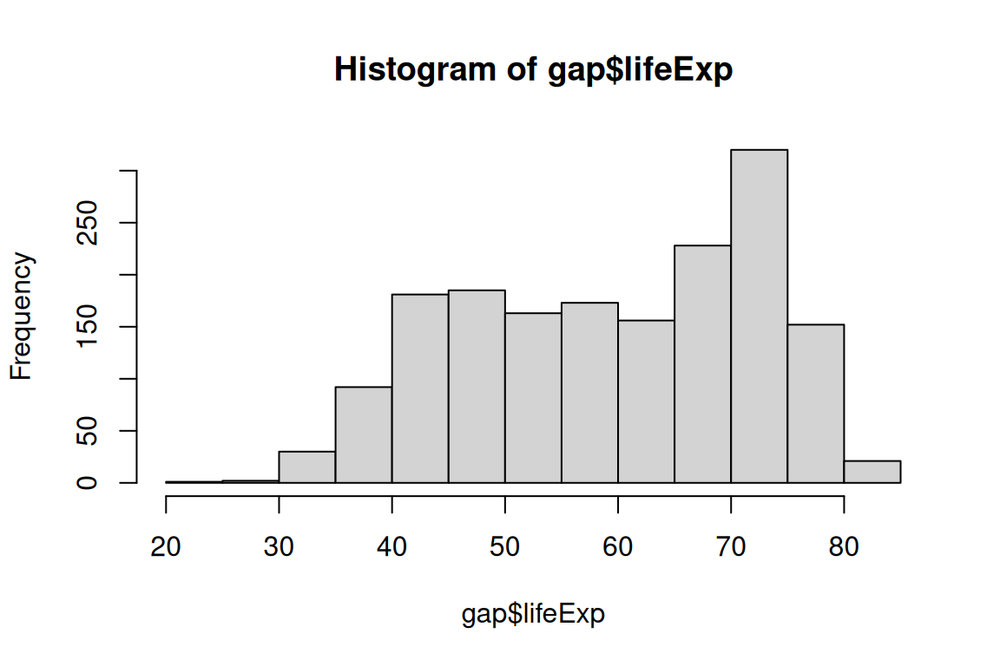
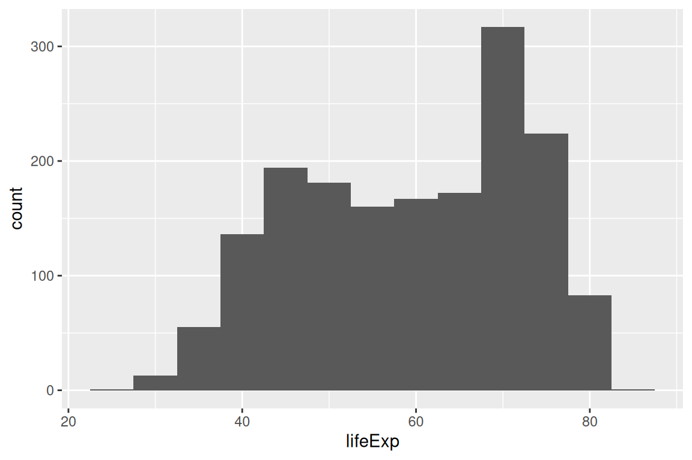
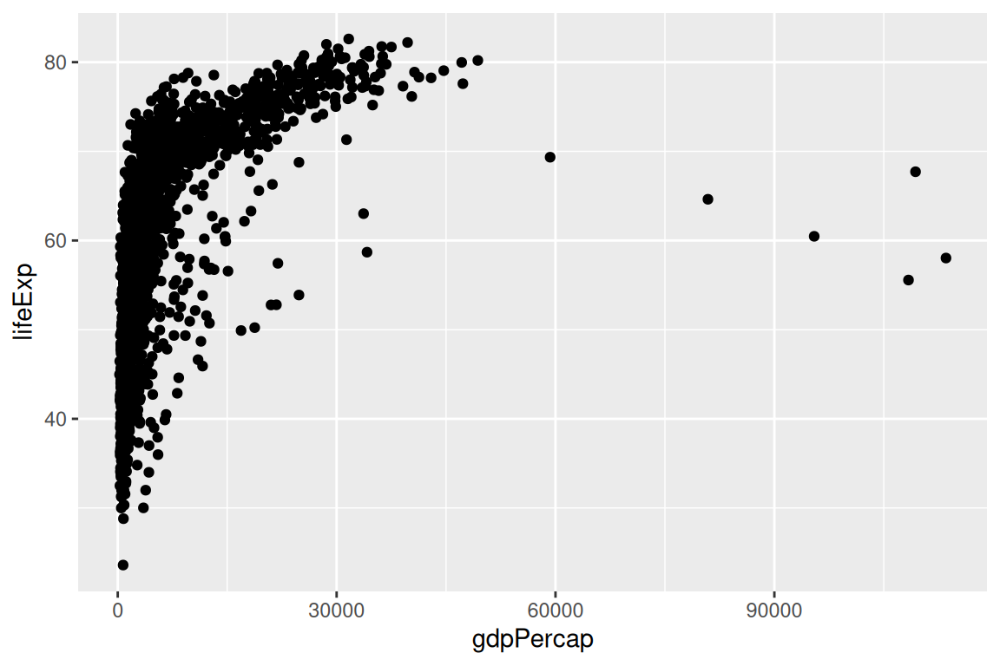
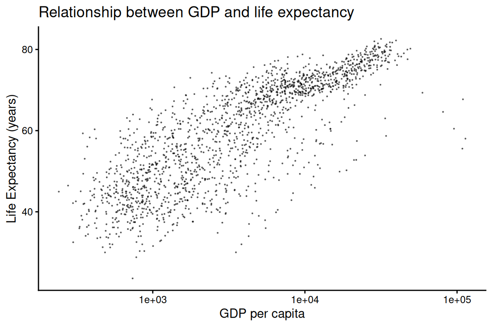
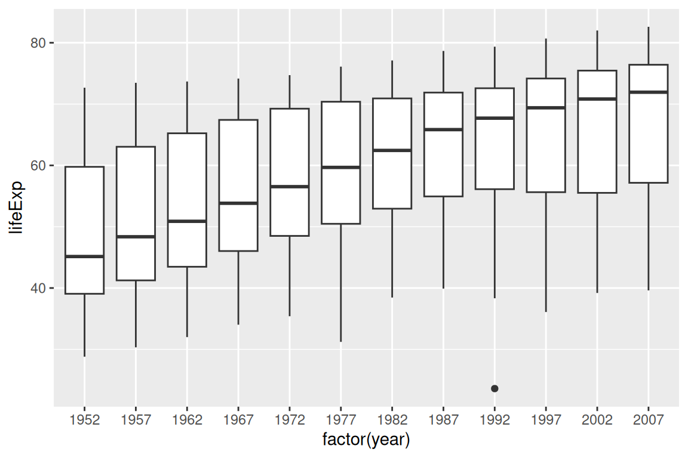
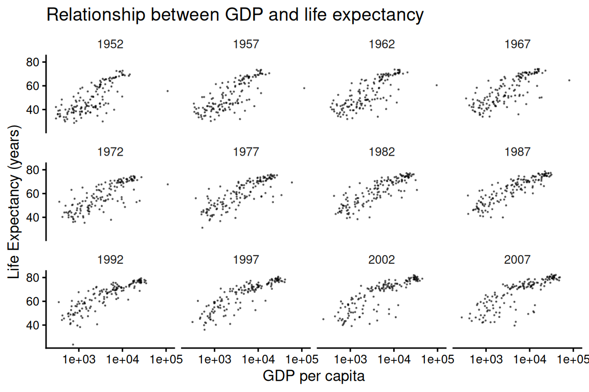
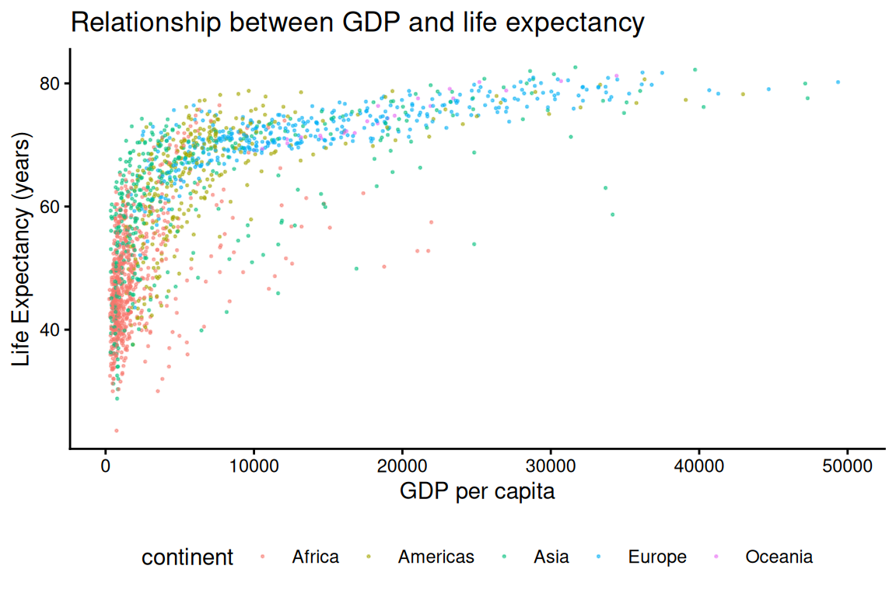
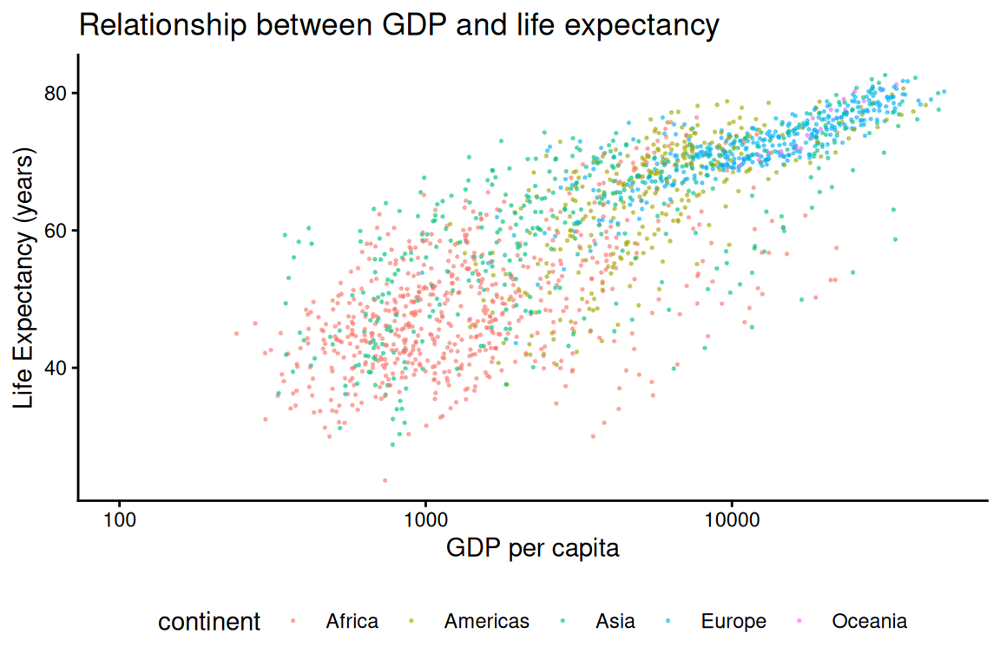
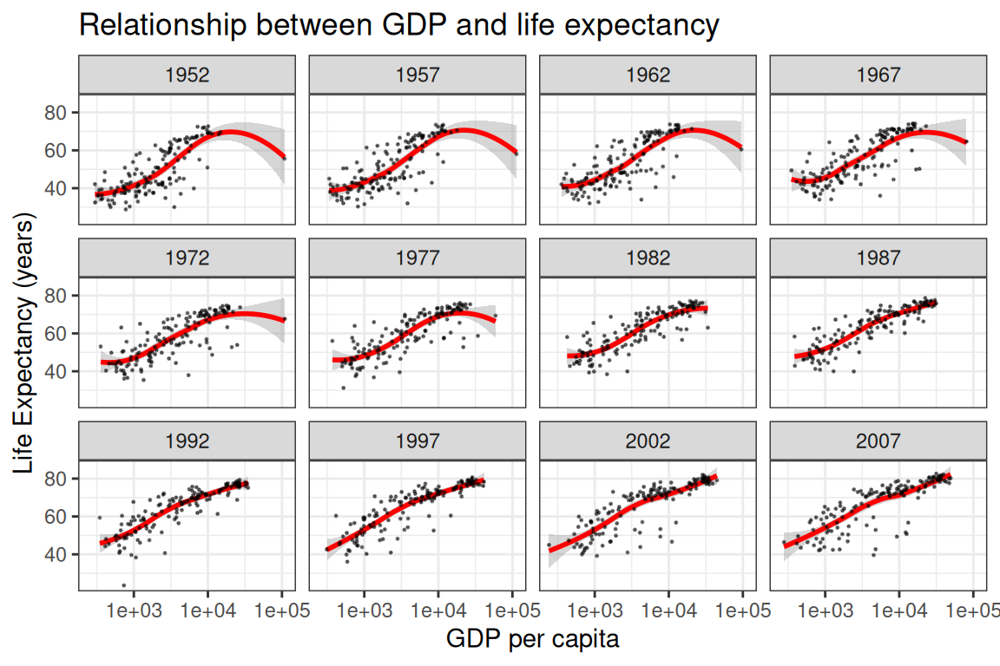
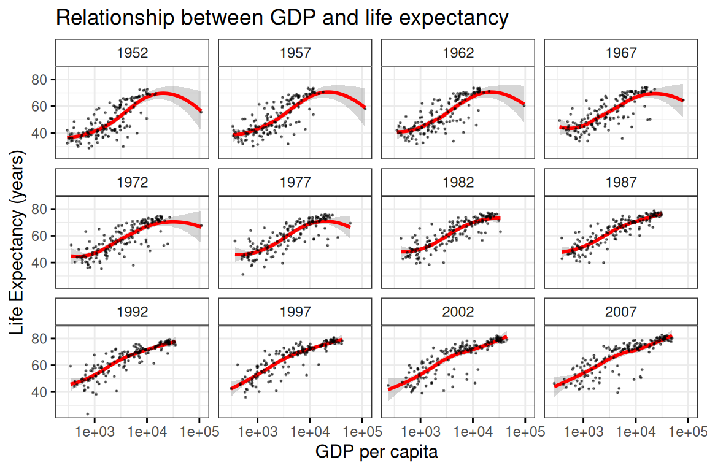

library(dplyr)
library(ggplot2)
gap <- read.csv(file.path("data", "gapminder.csv"))23 Practice Problem Solutions
Unless otherwise specified, these questions ask you to use the provided data, (gapminder.csv) which contains 6 columns and 1704 rows.
The columns are as follows:
- country: Name of country
- year: Year (YYYY, stored as a number),
- pop: Population of country in given year
- continent: Continent of country
- lifeExp: Life expectancy (years) of country in given year
- gdpPercap: GDP per capita, in international dollars, fixed price.
23.1 dplyr
- Use
dplyrto create a data frame containing data from before 1975 with every column exceptcontinent.
gap |>
filter(year < 1975) |>
select(-continent)
#> # A tibble: 710 × 5
#> country year pop lifeExp gdpPercap
#> <chr> <int> <dbl> <dbl> <dbl>
#> 1 Afghanistan 1952 8425333 28.8 779.
#> 2 Afghanistan 1957 9240934 30.3 821.
#> 3 Afghanistan 1962 10267083 32.0 853.
#> 4 Afghanistan 1967 11537966 34.0 836.
#> 5 Afghanistan 1972 13079460 36.1 740.
#> 6 Albania 1952 1282697 55.2 1601.
#> 7 Albania 1957 1476505 59.3 1942.
#> 8 Albania 1962 1728137 64.8 2313.
#> 9 Albania 1967 1984060 66.2 2760.
#> 10 Albania 1972 2263554 67.7 3313.
#> # ℹ 700 more rows- How many countries had a life expectancy greater than 60 in the year 1982?
gap |>
filter(year == 1982) |>
filter(lifeExp > 60) |>
nrow()
#> [1] 81
gap |>
filter(
year == 1982,
lifeExp > 60
) |>
nrow()
#> [1] 81- Use
dplyrandgrepl()to filter for countries with the letter “z” in their name.
?grepl
gap |>
filter(grepl("Z|z", country)) |>
arrange(desc(country))
#> # A tibble: 144 × 6
#> country year pop continent lifeExp gdpPercap
#> <chr> <int> <dbl> <chr> <dbl> <dbl>
#> 1 Zimbabwe 1952 3080907 Africa 48.5 407.
#> 2 Zimbabwe 1957 3646340 Africa 50.5 519.
#> 3 Zimbabwe 1962 4277736 Africa 52.4 527.
#> 4 Zimbabwe 1967 4995432 Africa 54.0 570.
#> 5 Zimbabwe 1972 5861135 Africa 55.6 799.
#> 6 Zimbabwe 1977 6642107 Africa 57.7 686.
#> 7 Zimbabwe 1982 7636524 Africa 60.4 789.
#> 8 Zimbabwe 1987 9216418 Africa 62.4 706.
#> 9 Zimbabwe 1992 10704340 Africa 60.4 693.
#> 10 Zimbabwe 1997 11404948 Africa 46.8 792.
#> # ℹ 134 more rows
gap |>
filter(grepl("z", tolower(country))) |>
arrange(desc(country))
#> # A tibble: 144 × 6
#> country year pop continent lifeExp gdpPercap
#> <chr> <int> <dbl> <chr> <dbl> <dbl>
#> 1 Zimbabwe 1952 3080907 Africa 48.5 407.
#> 2 Zimbabwe 1957 3646340 Africa 50.5 519.
#> 3 Zimbabwe 1962 4277736 Africa 52.4 527.
#> 4 Zimbabwe 1967 4995432 Africa 54.0 570.
#> 5 Zimbabwe 1972 5861135 Africa 55.6 799.
#> 6 Zimbabwe 1977 6642107 Africa 57.7 686.
#> 7 Zimbabwe 1982 7636524 Africa 60.4 789.
#> 8 Zimbabwe 1987 9216418 Africa 62.4 706.
#> 9 Zimbabwe 1992 10704340 Africa 60.4 693.
#> 10 Zimbabwe 1997 11404948 Africa 46.8 792.
#> # ℹ 134 more rows
gap |>
filter(grepl("z", country, ignore.case=TRUE)) |>
arrange(desc(country))
#> # A tibble: 144 × 6
#> country year pop continent lifeExp gdpPercap
#> <chr> <int> <dbl> <chr> <dbl> <dbl>
#> 1 Zimbabwe 1952 3080907 Africa 48.5 407.
#> 2 Zimbabwe 1957 3646340 Africa 50.5 519.
#> 3 Zimbabwe 1962 4277736 Africa 52.4 527.
#> 4 Zimbabwe 1967 4995432 Africa 54.0 570.
#> 5 Zimbabwe 1972 5861135 Africa 55.6 799.
#> 6 Zimbabwe 1977 6642107 Africa 57.7 686.
#> 7 Zimbabwe 1982 7636524 Africa 60.4 789.
#> 8 Zimbabwe 1987 9216418 Africa 62.4 706.
#> 9 Zimbabwe 1992 10704340 Africa 60.4 693.
#> 10 Zimbabwe 1997 11404948 Africa 46.8 792.
#> # ℹ 134 more rows- Use
dplyrto sort the gap data set in reverse alphabetical order.
gap |>
arrange(desc(country))
#> # A tibble: 1,704 × 6
#> country year pop continent lifeExp gdpPercap
#> <chr> <int> <dbl> <chr> <dbl> <dbl>
#> 1 Zimbabwe 1952 3080907 Africa 48.5 407.
#> 2 Zimbabwe 1957 3646340 Africa 50.5 519.
#> 3 Zimbabwe 1962 4277736 Africa 52.4 527.
#> 4 Zimbabwe 1967 4995432 Africa 54.0 570.
#> 5 Zimbabwe 1972 5861135 Africa 55.6 799.
#> 6 Zimbabwe 1977 6642107 Africa 57.7 686.
#> 7 Zimbabwe 1982 7636524 Africa 60.4 789.
#> 8 Zimbabwe 1987 9216418 Africa 62.4 706.
#> 9 Zimbabwe 1992 10704340 Africa 60.4 693.
#> 10 Zimbabwe 1997 11404948 Africa 46.8 792.
#> # ℹ 1,694 more rows23.2 ggplot
- Plot a histogram of life expectancy.
hist(gap$lifeExp)
gap |>
ggplot() +
aes(x = lifeExp) +
geom_histogram(binwidth = 5)

- Plot the life expectancy against gdpPercap using
geom_point
gap |>
ggplot() +
aes(x = gdpPercap, y =lifeExp) +
geom_point()
- Clean up your scatterplot with a title and axis labels. Output it as a PDF and see if you’d be comfortable with including it in a report/paper.
gap |>
ggplot() +
aes(x = gdpPercap, y =lifeExp) +
geom_point(size = 0.1, alpha = 0.5) +
labs(
x = "GDP per capita",
y = "Life Expectancy (years)",
title = "Relationship between GDP and life expectancy"
) +
scale_x_log10() +
theme_classic()
- Make a boxplot of life expectancy (y) versus year (x).
gap |>
ggplot() +
aes(y = lifeExp, x = factor(year)) +
geom_boxplot()
- Use
facet_wrapto create a trellis plot of life expectancy by gdpPercap scatterplots, one subplot per year.
gap |>
ggplot() +
aes(x = gdpPercap, y =lifeExp) +
geom_point(size = 0.1, alpha = 0.5) +
labs(
x = "GDP per capita",
y = "Life Expectancy (years)",
title = "Relationship between GDP and life expectancy"
) +
scale_x_log10() +
theme_classic() +
facet_wrap(~year) +
theme(
strip.background = element_blank()
)
- Plot life expectancy versus gdpPercap. Now plot so that different continents are in different colors. Use
scale_x_continuous()to set the x-axis limits to be in the range from 100 to 50000.
gap |>
ggplot() +
aes(x = gdpPercap, y =lifeExp, color = continent) +
geom_point(size = 0.3, alpha = 0.5) +
labs(
x = "GDP per capita",
y = "Life Expectancy (years)",
title = "Relationship between GDP and life expectancy"
) +
scale_x_continuous(limits = c(100, 50000)) +
theme_classic() +
theme(
legend.position = "bottom"
)
#> Warning: Removed 6 rows containing missing values or values outside the scale range
#> (`geom_point()`).
- Figure out how to use the log-scale for gdpPercap, without manually calculating the log values.
gap |>
ggplot() +
aes(x = gdpPercap, y =lifeExp, color = continent) +
geom_point(size = 0.3, alpha = 0.5) +
labs(
x = "GDP per capita",
y = "Life Expectancy (years)",
title = "Relationship between GDP and life expectancy"
) +
scale_x_log10(limits = c(100, 50000)) +
theme_classic() +
theme(
legend.position = "bottom"
)
#> Warning: Removed 6 rows containing missing values or values outside the scale range
#> (`geom_point()`).
- Create a “trellis” plot (using
facet_wrap) where, for a given year, each panel uses a) hollow circles to plot lifeExp as a function of log(gdpPercap), and b) a red loess smoother without standard errors to plot the trend. Turn off the grey background. Figure out how to use partially-transparent points to reduce the effect of the overplotting of points.
gap |>
ggplot() +
aes(x = gdpPercap, y = lifeExp) +
geom_smooth(method = "loess", color = "red") +
geom_point(alpha = 0.5, size = 0.2) + # alpha controls transparency
facet_wrap(~year) +
scale_x_log10() +
labs(
x = "GDP per capita",
y = "Life Expectancy (years)",
title = "Relationship between GDP and life expectancy"
) +
theme_bw()
- Building on your graph in Question 8, change at least two different properties in the
theme()layer to customize the graph to your liking.
gap |>
ggplot() +
aes(x = gdpPercap, y = lifeExp) +
geom_smooth(method = "loess", color = "red") +
geom_point(alpha = 0.5, size = 0.2) + # alpha controls transparency
facet_wrap(~year) +
scale_x_log10() +
theme_bw() +
labs(
x = "GDP per capita",
y = "Life Expectancy (years)",
title = "Relationship between GDP and life expectancy"
) +
theme(
strip.background = element_rect(fill = "white"),
axis.ticks = element_line(color = "black")
)
23.3 Programming
- Write a for loop that will loop through a vector of values and produce a vector equal to the input vector except with negative values set to zero. (ex: `c(-2.3, 0, 6, 9) should become c(0, 0, 6, 9))
vec <- c(-2.3, 0, 6, 9)
out <- c()
for (v in vec) {
if (v < 0) {
v <- 0
}
out <- c(out, v)
}
identical(out, c(0, 0, 6, 9))
#> [1] TRUE- Below is a list of instructions that control a robot. The robot can move up or down only. The “+” instruction indicates the robot moves up, and the “-” instruction indicates the robot moves downwards. The robot starts at a position of zero. What position does the robot end at?
instr <- c(
"-", "-", "+", "+", "-", "+", "+", "-", "-", "-", "-", "+",
"+", "-", "-", "+", "+", "-", "+", "-", "-", "-", "+", "-", "-",
"-", "-", "-", "-", "-", "-", "-", "-", "-", "-", "+", "-", "+",
"-", "+", "-", "-", "+", "-", "+", "-", "-", "-", "+", "-", "-",
"-", "-", "+", "-", "+", "-", "+", "+", "-", "+", "-", "-", "-",
"-", "+", "-", "-", "-", "-", "-", "+", "+", "+", "-", "-", "+",
"+", "+", "+", "+", "-", "+", "+", "+", "+", "-", "-", "-", "+",
"-", "-", "-", "-", "+", "+", "+", "+", "-", "-", "-", "-", "-",
"-", "+", "-", "-", "+", "-", "-", "+", "+", "+", "-", "+", "-",
"-", "+", "-", "+", "-", "+", "+", "-", "+", "-", "-", "+", "+",
"-", "+", "-", "-", "+", "-", "-", "+", "+", "+", "-", "-", "-",
"+", "+", "+", "+", "-", "-", "+", "-", "-", "-", "+", "+", "-",
"+", "-", "+", "-", "-", "-", "+", "-", "+", "-", "+", "-", "-",
"-", "-", "+", "-", "-", "+", "-", "-", "+", "-", "+", "-", "-",
"-", "-", "+", "+", "+", "+", "+", "-", "-", "-", "-", "+", "+",
"-", "+", "+", "+", "+", "-", "-", "-", "+", "+", "+", "-", "+",
"-", "+", "+", "+", "-", "-", "-", "-", "-", "-", "-", "-", "+",
"+", "-", "-", "-", "-", "-", "-", "+", "+", "+", "+", "+", "+",
"+", "-", "+", "-", "-", "-", "+", "+", "+", "+", "+", "+", "+",
"-", "+", "-", "+", "+", "-", "+", "+", "+", "-", "+", "-", "-",
"-", "-", "+", "+", "+", "+", "-", "+", "-", "+", "-", "-", "+",
"-", "-", "+", "-", "-", "+", "-", "+", "+", "-", "+", "+", "+",
"+", "-", "+", "+", "-", "+", "+", "+", "-", "+", "-", "-", "-",
"+", "+"
)
# very succinctly:
ifelse(instr == "+", 1, -1) |> sum()
#> [1] -24
# in a for-loop
pos <- 0
for (i in instr) {
if (i == "+") {
pos <- pos + 1
} else {
pos <- pos - 1
}
}
pos
#> [1] -24